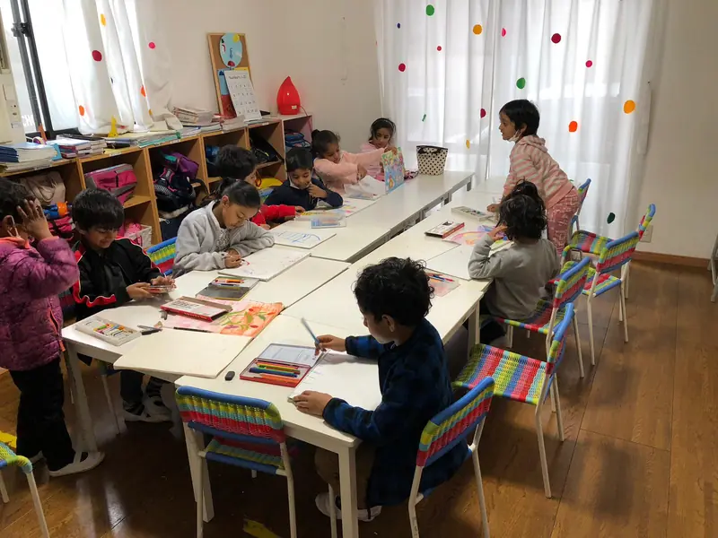
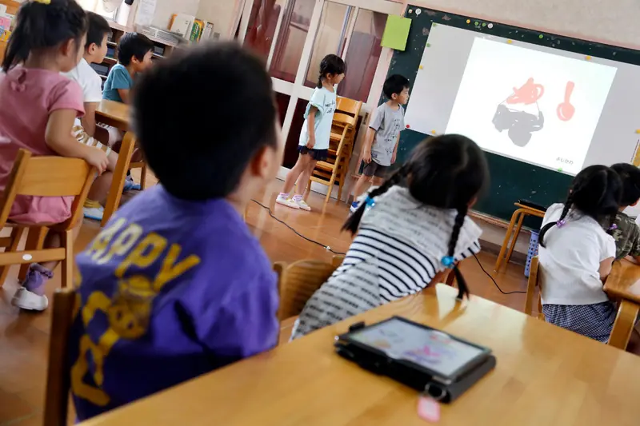
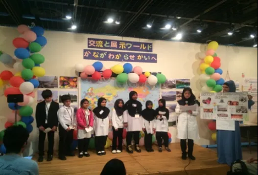

海老名市｜ケンブリッジ国際認定校
海老名で育つ、世界基準の英語力と確かな日本語。
英語ゼロからOK。保護者様は日本語だけで、安心してお任せください。
- 3歳〜A-Level
- 無償化で実質0円〜
- 5km圏内スクールバス
- 2007 創立19年の歴史 海老名・綾瀬に根ざす
- Cambridge 国際認定カリキュラム 探究型STEM教育
- 100% 毎日の国語指導 文科省検定教科書
- 0円〜 幼保無償化の対象 月額最大3.7万円給付
なぜ選ばれるのか
日本の保護者様に選ばれる、3つの安心理由
-
01
「英語だけ」に偏らない。確かな国語力も育成
文部科学省検定教科書で、日本人教員が毎日国語を指導します。
公立校と同じ検定教科書を使用
くわしく見る
インターナショナルスクールで最も心配される「日本語力の低下」。当校では日本人専任教員が毎日国語を指導。母国語の土台があるからこそ、深い英語表現力が育ちます。将来、日本の小学校・中学校への進学も安心です。
-
02
英語ゼロから歓迎。少人数の温かな環境
歌・フォニックス・遊びを通じて自然に。日本語スタッフがそばにいます。
面談・連絡帳はすべて日本語OK
くわしく見る
入園時のお子様の多くは英語学習が初めてです。歌やフォニックス、ゲームを通じて自然に言葉を吸収。日本人バイリンガルスタッフが常駐しているため、親御様の英語力は一切不要です。
-
03
無償化で実質月謝0円〜。良心的な学費
幼児部は実質0〜1.7万円、小学部は月額35,000円（税込）です。
明朗な月額制の学費
くわしく見る
都心校とは異なり、2007年の設立以来、地域に根ざした学費設計を維持。幼児部は国の無償化制度の適用で実質0円〜1.7万円、小学部も月額35,000円（税込）という明朗な学費です。
学びの体系
年齢に合わせた一貫教育プログラム

プリ・プライマリー遊びで育つ、英語の耳と口
イギリス発祥のフォニックスと歌・クラフトで自然な発音を育てながら、ひらがなや絵本、季節の行事も大切にします。
- フォニックス＆英会話発音・リスニング
- ひらがな・絵本日本語の基礎
- かぞえる算数数的感覚
- アート＆クラフト創造力
- リズム運動基礎体力
- スクールバス5km圏内
安心ポイント： 多くのお子様が英語ゼロからスタート。日本人バイリンガルスタッフが常駐し、連絡帳・面談も日本語対応です。
授業料と無償化を見る
プライマリーケンブリッジ探究 × 毎日の国語
算数・理科・ICTを英語で探究的に学び、同時に検定教科書を使った国語を毎日実施。将来の進路の選択肢を広げます。
- ケンブリッジ算数問題解決型
- ケンブリッジ理科仮説検証・実験
- プログラミングICTリテラシー
- 国語・漢字毎日実施
- 社会・異文化理解道徳・多様性
- 選択外国語仏語・アラビア語
国語の安心： 毎学年、公立小学校と同じ漢字・読解の到達目標をクリアする指導計画を組んでいます。
授業料と無償化を見る
中等部・高等部国内外の大学進学を見据えて
ケンブリッジ・ロワーセカンダリーからPre-IGCSE、A-Levelへ。批判的思考力・論述力・ディベート力を養います。
- Lower Secondary英語・数学・理科
- Pre-IGCSE / IGCSE国際標準資格
- A-Level大学進学
- ライティング＆ディベート論述力
- 第2外国語仏語・アラビア語
- 進路カウンセリング日英両言語
多様な進路： 国内高校・インター校、帰国生・総合型選抜、海外大学まで、一人ひとりの目標に伴走します。
授業料と無償化を見る学費と無償化
2026年4月改定 授業料と無償化シミュレーション
かんたん学費シミュレーター
- 月額授業料
- ¥37,000
- 助成
- −¥37,000
保護者様の実質ご負担額（月額）
¥0/ 月
助成の対象は幼児部のみです。
全学年の授業料（税込）
-
幼児部Nursery / LKG / UKG・3〜5歳¥37,000無償化で実質 ¥0〜¥17,000
5km圏内スクールバス（実費）
-
小学部Grade 1〜5・6〜10歳¥35,000税込
5km圏内スクールバス（実費）
-
中等部Grade 6〜7・11〜12歳¥37,000税込
公共バス・個別相談
-
高等部Pre-IGCSE 〜 A-Level¥40,000税込
海老名駅よりバス
※無償化の適用には、お住まいの自治体による「保育の必要性の認定」などの要件があります。送迎バスは別途実費です。詳しくはお問い合わせください。
見学・体験で詳しく聞いてみる安心の指導体制
お子様一人ひとりに寄り添う教育チーム
-
GB
Mr. David Sterling
ケンブリッジ・プライマリー教務主任
「子供たちの『Why?（なぜ？）』を大切に、実験や対話で学ぶ喜びを引き出します。」
-
JP
鈴木 美咲 先生
国語・児童保育主任
「保護者様が英語を話せなくてもご安心ください。連絡帳や面談も日本語で丁寧に対応します。」
-
CA
Ms. Aisha Rahman
STEM＆プログラミング担当
「ロボット教材やタブレットで、論理的思考と創造的な問題解決を楽しく学びます。」
保護者様の声
「最初は不安でした…」ご家族の声
-
「親が英語を話せなくても、全く問題ありませんでした」
夫婦ともに英語が得意ではなく、恐る恐る見学へ。先生方の笑顔と日本人スタッフの丁寧な説明に安心しました。年長になった今では、英語の歌を口ずさみ、絵本も大好きです。
海老名市 M.S.様年長5歳児のお母様
-
「日本の教科書で国語を学べるから、将来の進路も安心」
英語漬けで母国語が疎かになるのだけは避けたかったので、公立校と同じ国語教科書を毎日学べることが決め手でした。子供自身も学ぶ楽しさを実感しています。
綾瀬市 K.T.様小学2年生のお父様
-
「自宅近くまでの送迎バスと、毎日の連絡帳で安心」
共働きで送り迎えが心配でしたが、自宅近くまでスクールバスが来てくれて大助かり。先生方がその日の様子をこまめに共有してくださり、家族のように温かい学校です。
大和市 Y.O.様年中4歳児のお母様
学校生活・年間行事
笑顔あふれる日常と、多彩な学びのイベント
交通のご案内
アクセスとスクールバス
電車・路線バスでお越しの方
小田急小田原線・相鉄本線・JR相模線「海老名駅」東口バスターミナルより神奈中バスに乗車。最寄り停留所から徒歩すぐです。
ご自宅付近まで（5km圏内）
海老名市・綾瀬市・大和市・厚木市周辺を、運転手と添乗スタッフが同乗して運行。停留所はご自宅付近で個別に調整しますので、見学時にご相談ください。
海老名市方面
ルート・停留所・時刻をここに掲載します。
綾瀬市方面
ルート・停留所・時刻をここに掲載します。
大和市方面
ルート・停留所・時刻をここに掲載します。
厚木市方面
ルート・停留所・時刻をここに掲載します。
お車でお越しの方（駐車場あり）
圏央道「海老名IC」または「寒川北IC」より車で約10〜15分。敷地内に見学者・送迎者用の駐車場があります。
よくあるご質問
保護者様からのご質問にお答えします
英語が苦手な保護者でも、連絡や面談で困りませんか？
全く問題ありません。連絡帳、学校だより、保護者面談などはすべて日本語スタッフが対応します。
英語が初めての3歳児でもついていけますか？
ほとんどのお子様が英語ゼロで入園します。歌やリズム、遊びを通じて身体全体で吸収し、困ったときは日本人スタッフがそばでフォローします。
幼児教育・保育の無償化はどうやって受けられますか？
お住まいの自治体から「保育の必要性の認定」を受けることで給付対象となります。申請書類の流れは当校スタッフが分かりやすくご案内します。
卒業後、日本の公立小・中学校に進学できますか？
はい。検定教科書で毎日国語を学ぶため進学が可能です。私立中学・IB校・海外校への進路にも対応しています。
スクールバスはどこまで来てくれますか？
学校から半径約5km圏内（海老名市・綾瀬市・大和市・厚木市周辺）を運行。乗降場所はご自宅付近で調整します。
給食はありますか？
給食はなく、ご家庭からのお弁当と水筒をお持ちいただきます。アレルギーや食習慣にも対応しやすい方法です。
運動会・遠足などの年間行事はありますか？
年1回の運動会（ハウス対抗）と、年1回のスクールトリップがあります。Grade 4以上は2泊3日の宿泊体験、Grade 3以下・幼児部は日帰り遠足です。
地震や災害時の安全対策はどうなっていますか？
避難訓練、非常用備蓄、入退館管理、保護者への引き渡し手順などの内容をここに掲載します。
日本の礼儀作法やマナーはおろそかになりませんか？
ご安心ください。挨拶やお辞儀、靴揃え、「いただきます」「ごちそうさま」の感謝を、日本人教員と外国人教員が連携して日々指導しています。
無料体験・見学
まずは実際のクラスをご見学ください
お子様の年齢に合わせたクラスで約45分のレッスンを体験。無理な勧誘は一切ありません。
お申込みありがとうございます！
担当スタッフより24時間以内に確認のご連絡を差し上げます。
ご来校時のお願い・お持ち物
- 室内履き、外靴を入れる袋、筆記用具、お子様用の水筒をご持参ください（貸出スリッパあり）。
- 敷地内の無料駐車場をご利用いただけます。
- しつこい営業電話等は一切行いません。